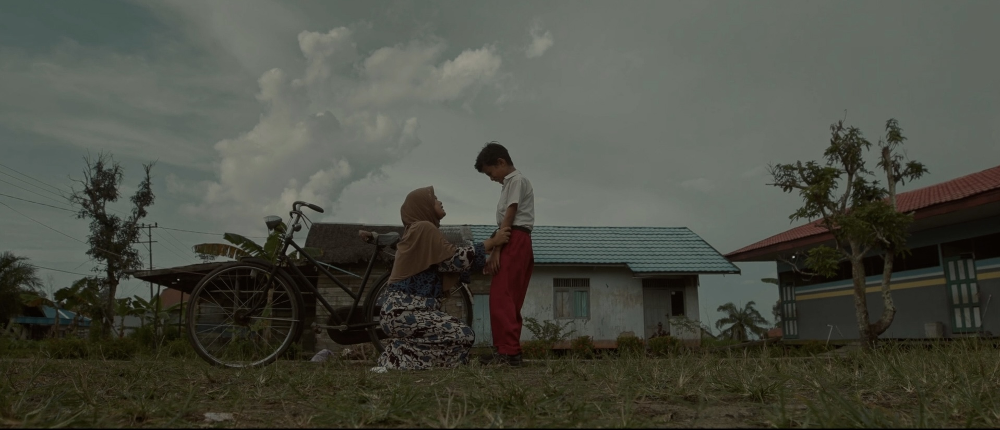
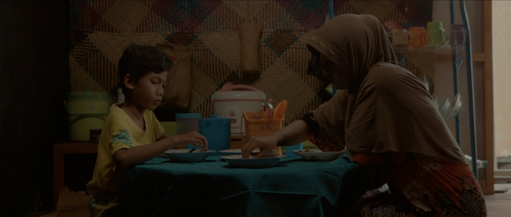

Dalam dunia perfilman, panjang atau pendeknya sebuah film bukanlah satu-satunya penentu kualitas. Terkadang, sebuah karya film pendek dapat mengemas pesan yang kuat dalam durasi singkat. Salah satu contohnya adalah film pendek berjudul ‘Pakasam’ yang berhasil mengeksekusi bagaimana perbandingan kelas sosial melalui perumpamaan makanan.
Salah satu keunggulan film ini terletak pada penulisan script yang rapi sehingga pembawaan cerita padu dan runtut, dengan selipan humor ala banjar sehingga membuat penonton tidak merasa bosan. Sinematografi yang rapi, dengan penggunaan tone color yang hangat menjadikan kita turut pula merasakan bagaimana perasaan karakter di dalamnya.
Skenario film Pakasam mampu menggambarkan isu sosial dengan cara yang ringan dan tidak terlalu eksplisit. Dengan simbolisme yang kuat, seperti perbedaan lauk bekal yang melambangkan ketidaksetaraan dan perbedaan kelas sosial, penonton dihadapkan pada realitas masyarakat yang terkadang membedakan kelas sosial seseorang melalui sebuah makanan. Perbedaan lauk bekal menjadi tema utama yang disampaikan secara halus namun efektif.
Namun, yang membuat Pakasam benar-benar unik adalah dalam bagaimana cara film ini mampu menyampaikan emosi dalam sekejap. Melalui gestur dan ekspresi wajah Amad, penonton dapat merasakan kekecewaan dan kecemasan yang dihadapi Amad ketika dia dibawakan lauk bekal ikan pakasam oleh ibunya.
Film ini menceritakan kisah seorang anak bernama Amad, yang meminta ibunya untuk mengganti bekal makanan untuk dibawa ke sekolah. Dikarenakan Amad selalu diejek dengan teman-temannya karena membawa makanan yang berbeda dengan anak yang lain, tetapi yang terjadi ibunya tidak memberikan lauk ayam tapi malah membawakan ikan pakasam.
Disamping film ini berhasil dalam banyak hal, ada satu titik kritik yang perlu diperhatikan, yaitu karakterisasi yang mungkin bisa lebih dikembangkan. Karena durasi yang terbatas, potensi karakter dalam film ini mungkin belum sepenuhnya tergali. Meski begitu, hal ini juga dapat dilihat sebagai keputusan penyutradaraan untuk memfokuskan perhatian pada isu sosial yang ingin disampaikan.

Secara keseluruhan, Pakasam ialah contoh nyata bagaimana film pendek dapat menjadi media yang kuat dalam mengangkat suatu isu sosial. Dengan narasi yang terstruktur dengan baik, perumpamaan yang cerdas, dan penyampaian pesan yang halus namun vokal, film ini berhasil mengajak penonton untuk melihat lebih dalam dan merenungkan tentang kompleksitas realita sosial yang seringkali terabaikan.
Pakasam | 2022 | Durasi: 5 Menit 55 Detik | Sutradara : Desy Aulia Zahra | Produksi: SMKN 2 Banjarmasin
Comments (0)